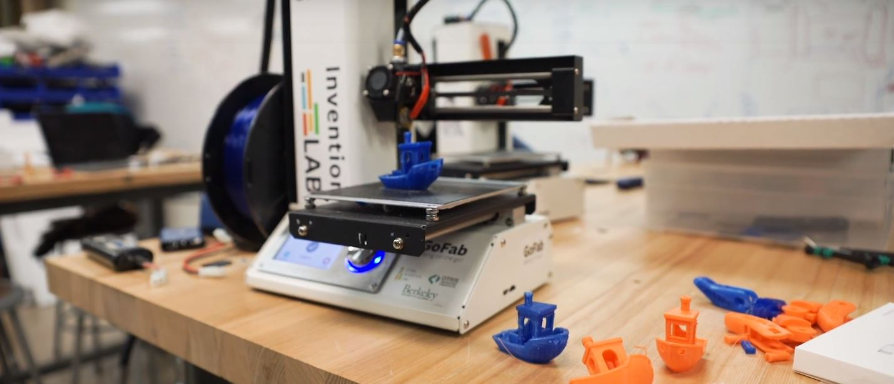

Super User.
As a Super User in the Invention Lab, a makerspace on the UC Berkeley Campus, I act as a student supervisor. I help to maintain the lab space while also assisting users in properly handling the prototyping and fabrication equipment.
When I’m on duty, one of my priorities are making sure that users get the most out of the lab’s resources. I assist in locating parts purchased from the Invention Lab store and helping to troubleshoot issues with the fabrication tools we have (Ultimakers, laser cutters, soldering equipment, hand tools, etc.).
I am also available for users to get advice on their projects and figure out clever solutions. I have helped students use Fusion 360 to build parts, pointed them towards online, open-source resources, and advised users on what kind of materials would best suit their needs.